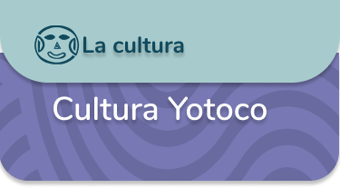

En los valles de los ríos Calima y Cauca, entre el 200 a.C. y el 1200 d.C., las sociedades Yotoco modificaron la forma en la que expresaron materialmente su mundo. Durante este periodo es posible observar el énfasis puesto en la elaboración de suntuosos objetos de oro, hechos principalmente con fines funerarios, que se convirtió en una de las principales formas de expresión de sus relaciones sociales, de su ideología y la diferenciación social.
El oro fino se prestaba para elaborar estos adornos porque es maleable y puede ser martillado, repujado, recortado y pulido para crear objetos que juegan con el sonido y los reflejos de luz. En anillos y narigueras de la región Calima, como en la Costa Pacífica, se usó la granulación o soldadura por fusión
Pero más allá de la tecnología es el simbolismo el que explica la importancia del metal sagrado. Eterno, brillante y amarillo, el oro está relacionado en el cosmos amerindio con el sol que renueva la vida todos los días. Al vestirse de oro, los caciques comunicaban a la comunidad que su poder propiciaba la fertilidad y la vida.


.png)
.png)